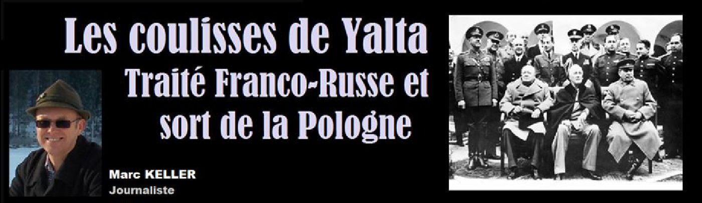
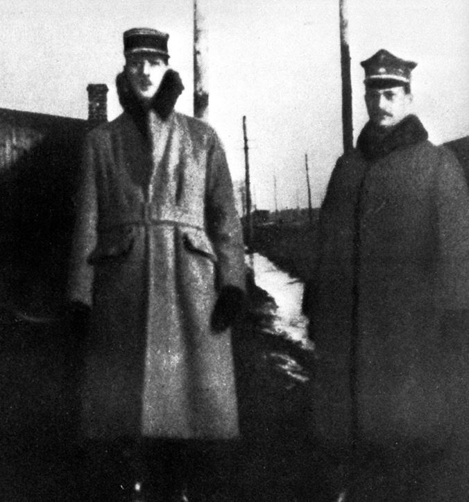
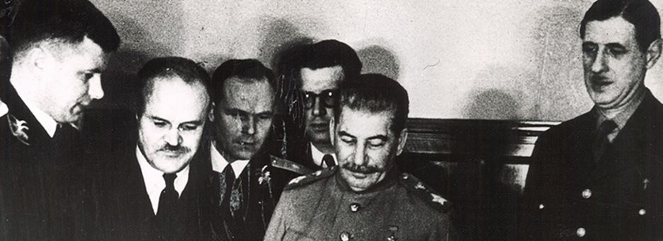
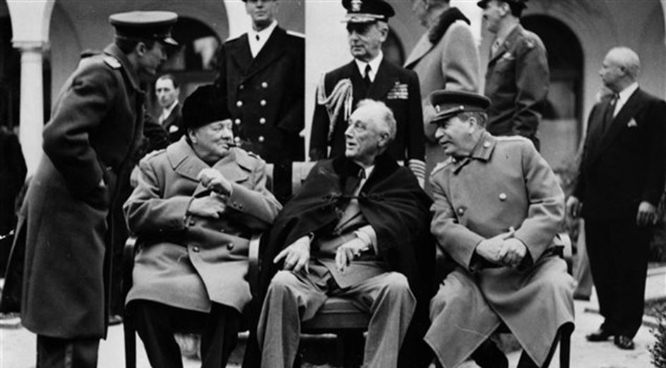

Les coulisses de Yalta. Traité Franco-Russe et sort de la Pologne
par Marc KELLER

De manière constante le général de Gaulle a toujours lutté pour l’indépendance et la grandeur de la France. Dans ce contexte il a pris ses distances avec les USA et leurs visées hégémoniques. Il a cherché des alliances multiples et objectives notamment en reconnaissant la Chine de Mao dès 1964, mais aussi en signant le traité franco-russe avec Staline dès 1944.
Quand Charles de Gaulle a décidé de se rendre à Moscou en novembre-décembre 1944 et a accepté de consacrer trois semaines à ce voyage, il a clairement montré l’importance qu’il attachait à une coopération avec la Russie. Joseph Staline, tour à tour « petit père du peuple » et « ogre du Caucase » a bien sûr essayé d’écraser son allié français en position de faiblesse. C’était compter sans le général qui est resté impassible tout au long de ces tractations, revenant seulement à la charge pour défendre l’essentiel. A savoir l’aboutissement d’un traité d’entente mutuelle et le sort de la Pologne.
DE GAULLE ET LA POLOGNE
Il faut savoir que la Pologne n’était pas indifférente à Charles de Gaulle. Jeune officier il avait été instructeur à l’école d’officiers de Rembertow, à côté de Varsovie. Et accessoirement il avait pris part au côté des polonais à la guerre russo-polonaise (1919-1921) qui a été gagnée par les polonais. Il est dit que de Gaulle a eu une part dans cette victoire. En effet, il avait été prisonnier à Ingolstadt en Allemagne pendant la première guerre mondiale avec le maréchal soviétique Toukatchevski qui est devenu entretemps le général en chef du front ouest.
Connaissant la stratégie de Toukatchevski, qui était son adversaire préféré aux échecs, de Gaulle eut beau jeu d’en informer les polonais. Une autre légende (sûrement vraie mais non vérifiable) veut que le jeune et fringant officier français a eu quelques aventures galantes avec les belles comtesses qui fréquentaient la célèbre pâtisserie Blikl à Varsovie…
Toujours est-il que Charles de Gaulle a gardé toute sa vie un sentiment particulier et une confiance en la Pologne qui s’est encore vérifiée en 1967, quand il a posé la première pierre de la nouvelle ambassade de France à Varsovie. Une ambassade largement surdimensionnée par rapport au rôle que jouait la Pologne à l’époque, comme s’il pressentait un avenir de premier plan pour ce pays. Ce qui se vérifie aujourd’hui, la Pologne étant une des locomotives économiques de l’Europe. En 1944 à Moscou, ce qui intéressait le Président de Gaulle c’était de préserver la Pologne du joug soviétique… et il a failli y arriver !
LA POLOGNE TRAHIE PAR ROOSEVELT
En marge des négociations du traité franco-russe, de Gaulle s’est donc employé à convaincre Staline d’une nécessaire neutralité de la Pologne dans l’Europe du futur. Une sorte de pays charnière entre les deux blocs. Cela ne s’est pas fait sans mal puisque Staline a essayé d’imposer à de Gaulle la reconnaissance de « son » comité de Lublin, gouvernement communiste provisoire de la Pologne en cours de libération. Devant le veto de la France, Staline a fini par céder du terrain, pas à pas. Convaincu que de Gaulle parlait au nom des alliés, le chef d’Etat soviétique a fini par se faire à l’idée d’une Pologne disposant d’une certaine marche de manœuvre.
Aussi quel n’a pas été l’étonnement de Joseph Staline à Yalta, en constatant l’absence du général de Gaulle. Il ne savait pas encore que Roosevelt qui voyait en de Gaulle le prochain dictateur de l’Europe, avait émis un veto sans concession à sa présence à Yalta. Il a cependant compris qu’il y avait de l’eau dans le gaz et a lancé son va-tout. D’un ton badin (paraît-il) il a informé Roosevelt que la Pologne ferait partie du bloc soviétique. C’est un Roosevelt fatigué (il mourra quelques semaines plus tard) et totalement ignorant de la géopolitique européenne qui a donné son assentiment sans même essayer de négocier ou faire mine de refuser. Le sort de la Pologne était scellé : Staline avait obtenu ce jour-là plus qu’il n’en espérait. Pour la Pologne cela impliquait 40 ans de joug communiste et une forte régression de son niveau d’avant-guerre. De Gaulle était furieux au point de refuser l’invitation de Roosevelt sur le chemin du retour de Yalta. Cette trahison a d’ailleurs été trop facilement pardonnée puisque la Pologne fait des ronds de jambes aux Etats Unis en achetant des avions ou des hélicoptères de qualité discutable (matériel reconstruit à la technologie obsolète) plutôt que du matériel européens de top qualité. Un amour non partagé semble-t-il puisque les polonais restent parmi les rares européens à nécessiter un visa pour les USA. Et malgré une participation aussi exemplaire que dénuée de sens à la guerre en Irak, la Pologne n’a obtenu aucun des contrats promis… Ce masochisme d’une certaine élite politique est de moins en moins partagé par le peuple polonais qui voit son salut dans l’avenir de l’Europe et critique de plus en plus lucidement les agissements des américains.
LE PARTAGE DU MONDE EN TOUTE IMPUNITE
Yalta est le symbole du « partage du monde » entre les grandes puissances. Il est regrettable que le seul visionnaire de l’équipe des « Grands », à savoir Charles de Gaulle ait été arbitrairement écarté des débats. La raison : Roosevelt n’avait pas digéré que notre héros national ait contrecarré son plan de transformer la France en un dominion américain régi par l’AMGOT (Allied Military Government of Occupated Territories).
Autour de la table, les trois intervenants ont chacun défendu leur pré carré, sans réelle vision d’avenir et en toute incompétence. Le grand gagnant a été le russe Staline qui a quasiment obtenu tout ce qu’il a demandé. Churchill pourvu qu’on ne touche pas au Commonwealth et à l’insularité de l’Angleterre n’avait que faire de l’avenir de l’Europe. Quant à Roosevelt, il a prouvé là que les USA ne méritaient en aucun cas le titre de première puissance au monde, tant leur diplomatie était chaotique, chancelante et inefficace. Mais Yalta est aussi un signal, un signal très fort, pour montrer que la politique de l’Amérique, subordonnée aux lobbies et aux trafics d’influence en tous genres n’irait jamais dans le sens de la paix dans le monde ou d’un équilibre pacifique.
N’oublions jamais que les USA ont été en guerre 224 ans en 240 ans d’existence. Un record inégalé.
LE TRAITE FRANCO-RUSSE
Redoutables négociateurs, droits dans leurs bottes, capables de tout remettre en cause à chaque instant, Joseph Staline et Charles de Gaulle ont fini par réussir à se mettre d’accord sur les termes du fameux traité franco-russe qui a marqué les relations entre les deux puissances jusqu’à aujourd’hui.
Staline a essayé de faire boire de Gaulle pour tromper sa vigilance et l’attendrir. Peine perdue.
De Gaulle a essayé de jouer la montre et de se montrer totalement inflexible. Peine perdue.
Le dernier soir avant le départ, Staline a imposé à ses hôtes la projection de films de propagande interminables… A la fin du premier film, Charles de Gaulle s’est levé, a salué Staline par un « Au revoir maréchal. J’ai été heureux de vous rencontrer et d’échanger mon point de vue avec le vôtre ». Et il est parti directement à l’ambassade de France où il logeait. Malgré les rappels de Staline et de ses propres collaborateurs.
Une heure plus tard Bidault (chef des négociateurs français) arrivait avec le projet de traité mis au point avec Molotov. Tout avait été modifié et adapté aux vœux du général. Le traité a donc été signé in-extremis.
Au moment d’arroser cet événement Staline a fait un vrai compliment à de Gaulle : « Je vois maintenant que la France est en de bonnes mains. Elle a des dirigeants forts. »
L'alliance a principalement pour but « d'éliminer toute menace provenant de l'Allemagne et à faire obstacle à toute initiative de nature à rendre possible une nouvelle tentative d'agression de sa part ».
Partager cette page